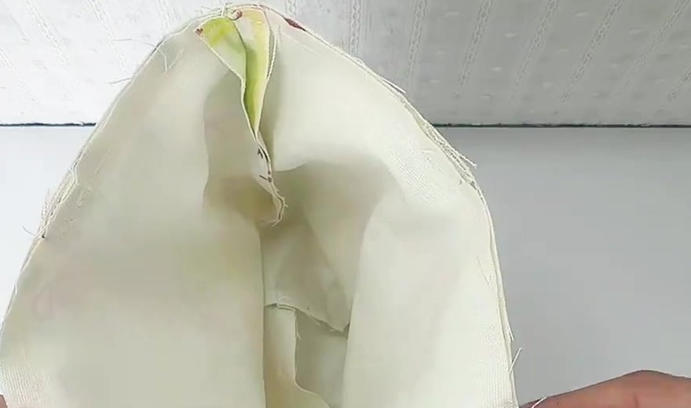

KHÔNG
bắt buộc vắt sổ
Vắt sổ: may chỉ bọc mép vải cho khỏi tưa.
Túi có lớp lót kín: sau khi lộn, mọi mép vải thô đều nằm giữa vải ngoài và vải lót — không lộ ra, không cọ vào đồ. Quai gấp 4 cũng đã giấu mép. Trong video (ảnh bên): mép để thô, còn sợi tưa, không thấy vắt sổ chỗ nào.

Video 0:37(a) Bản đồ đường may · mặt trái vải, vẽ đúng tỉ lệ
Xanh — đường may; mép thô sẽ nằm kín: không cần xử lý.
Vàng — mép vải: chỉ zigzag khi vải rất tưa, trước khi ráp.
Cam — khe luồn dây: chỉ chấm keo hoặc zigzag hẹp.
(b) Mặt cắt: mép thô nằm ở đâu?
vải ngoài
vải lót
mép thô
đường diễu
dây rút
| (c) Đường may | Vắt sổ? | Nếu vải rất tưa thì làm gì | Lưu ý |
|---|---|---|---|
| 1 Sườn + đáy (ngoài, lót) | Không | Zigzag mép từng mảnh, trước khi ráp | Vẫn ủi rẽ đường may như thường |
| 2 Góc đáy (4 góc) | Không | Zigzag luôn 2 cạnh ô khoét 5 × 5 cm | Không tỉa sát đường may góc |
| 3 Khe luồn dây (2 sườn) | Không | Chấm keo chống tưa, hoặc zigzag hẹp | Không vắt sổ dày: cộm, kẹt dây |
| 4 Đường may miệng túi | Không | Không cần: đường diễu ① ép chặt mép | Giữ đủ 1 cm, không tỉa bớt |
| 5 Quai (gấp 4) | Không | Không cần: mép thô đã gấp vào trong | Đầu quai nằm trong đường miệng |
| 6 Khe lộn (đáy lót) | Không | Không cần: gấp mép vào 1 cm rồi may mí | May mí 0,2 cm là đủ chắc |
(d) Không có máy vắt sổ? Dùng 1 trong 3 cách
- Zigzag (máy nhà nào cũng có): rộng 3–4 mm, dài 1,5–2 mm.
- Kéo răng cưa: may xong, tỉa bớt 1–2 mm mép.
- Keo chống tưa: chấm dọc mép; hợp cho khe dây.
(e) Khi nào BẮT BUỘC xử lý mép?
- Túi không lót (biến thể, không phải mẫu video): mép lộ trong lòng túi → may kiểu Pháp.
- Lanh dệt thưa, vải thô bở sợi → zigzag mọi mép.
- Túi hay giặt máy → zigzag để mép không tưa dần.
Bước 1 tỉa còn 0,3 cm; tổng 0,4 + 0,6 = 1 cm như cũ.